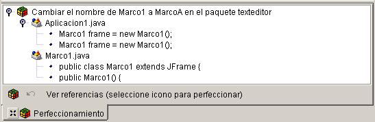

Es una función de JBuilder Developer y Enterprise.
JBuilder proporciona muchos tipos de perfeccionamientos (refactoring):
Se accede a las opciones de perfeccionamiento desde el menú contextual del editor, desde el menú Edición, desde el panel de estructura y desde un menú contextual de los diagramas UML. Para realizar el perfeccionamiento desde el editor, seleccione un símbolo o expresión, haga clic con el botón derecho del ratón y escoja un comando de perfeccionamiento. Algunos perfeccionamientos abren un cuadro de diálogo y una pestaña Perfeccionamiento en el panel de mensajes; otros, por el contrario, se realizan automáticamente. La pestaña Perfeccionamiento muestra una vista previa del perfeccionamiento.

Antes de realizar el perfeccionamiento, JBuilder proporciona diferentes mecanismos para obtener información sobre un símbolo. Puede encontrar su definición mediante el comando Buscar definición, situado en el menú contextual del editor. También puede buscar todas las referencias al símbolo mediante el comando Buscar referencias.
Si desea más información, consulte:
Generación de aplicaciones con JBuilder Perfeccionamiento de símbolos de código